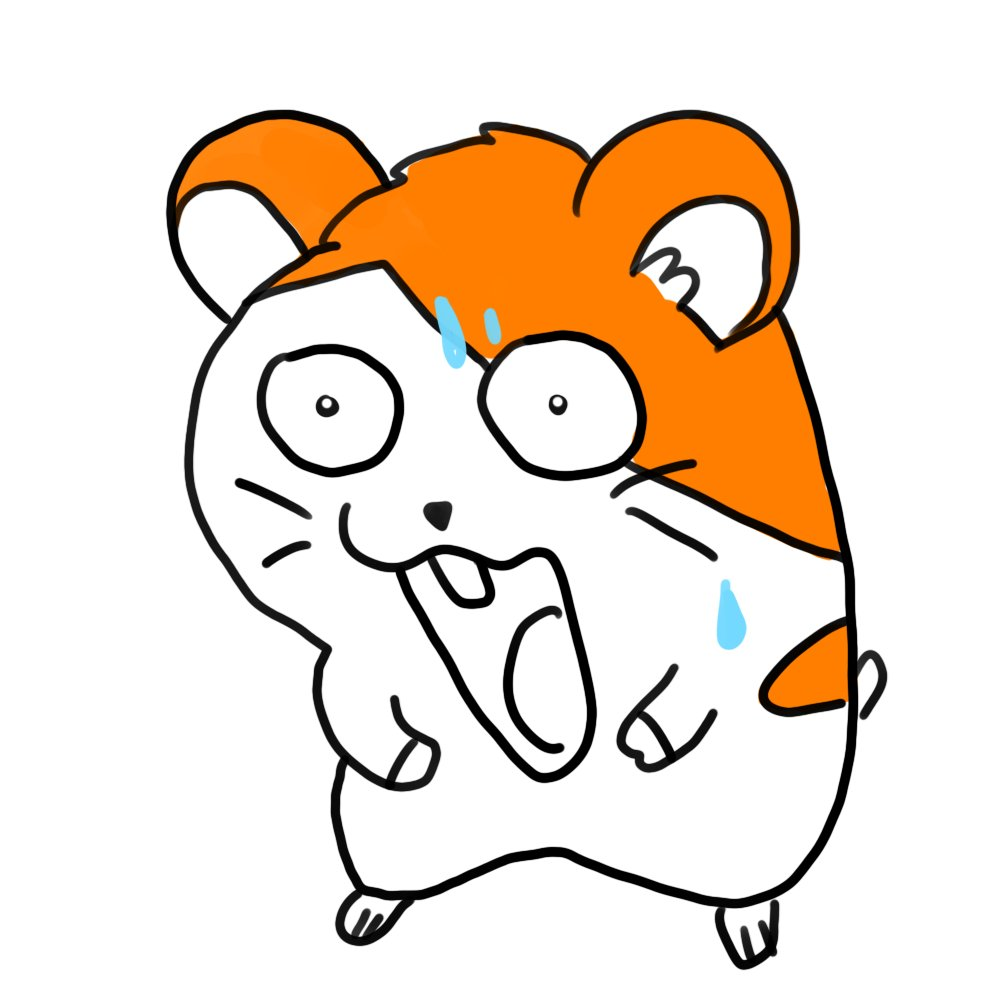

About me
- 20↑ (성인만 와주세요)
- 일상 앙스타 판소 웹툰
- 이별은 블락
-
남의 대화에 맘찍、끼어들기 잦아요
→겹친 한정 - 욕、무지성 소비 전시 조금 있습니다
- 좋아하는 걸로 눈치 안보는 탐라가 좋아요
ETC
- 일상 위주로 굴러갑니다.
- 셀털 많아요!
- 이든 / 든 / 이디 편하게 불러주세요
-
너무 오래 방치된 계정은 블블하고 있습니다.
블락이 아니면 다시 걸어주셔도 돼요! - 삐계는 때 되면 모시러가요 =33
-
삐계 딱히 숨기고 있지 않습니다.
삐계에서도 편하게 불러주셔도 괜찮아요.